过去三年，AI 并不是一直在做同一件事——它经历了三次范式跃迁，每一次都在改变「AI 能为人做什么」这个问题的答案。
🔑 过去三年，三个关键变化
成本断崖式下降
GPT-4 级别能力的调用成本三年内下降超过 99%，AI 从「用不起」变成「随便用」
模型能力全面普惠
国产大模型（DeepSeek、混元、Kimi 等）快速追平，国内用户无需翻墙即可获得顶级 AI 能力
工具集成成为标配
AI 不再孤立存在，通过 MCP 协议可与几乎所有 SaaS 工具打通，形成真正可用的自动化工作流
WorkBuddy 是腾讯推出的 AI Agent 产品。与普通 AI 聊天工具最大的不同是：它不只是「回答」，而是真正帮你「做事」——自动拆解任务、调用工具、操作文件、联动多个应用。
Agent 模式
自主规划执行步骤，全程可观察、可干预
Skill 技能生态
100+ 现成技能，也能自己封装工作流一键复用
连接器打通
腾讯文档、QQ 邮箱、腾讯会议等工具无缝联动
微信远程操控
手机发指令，电脑后台自动执行
自动化定时任务
设好触发条件，每天自动跑，早上醒来任务已完成
对话记忆
越用越懂你，自动记住习惯和偏好，减少重复交代
访问官网
打开浏览器，访问 workbuddy.cn，点击下载按钮
选择系统版本
支持 macOS（Apple Silicon / Intel）和 Windows，根据你的系统选择对应版本下载
正常安装
Mac：将应用拖入 Applications 文件夹；Windows：双击安装包按提示完成安装
微信扫码登录
打开 WorkBuddy，选择微信扫码登录——无需注册账号，扫一下即可进入
🖥️ 三大场景模式（对话框上方切换）
进入后的中央区域是主对话区，顶部可切换三种场景模式，每种模式下方都有对应的快捷模板，点击后直接替换内容发送即可：
| 场景模式 | 快捷方式示例 | 适合做什么 |
|---|---|---|
| 💻 代码开发 | 日常开发、网站开发、Agent 应用、Skill 开发 | 写代码、做工具、搭小程序 |
| 📄 日常办公 | 文档处理、数据分析可视化、深度研究、幻灯片 | 写报告、整数据、做 PPT——传媒岗位主力模式 |
| 🎨 设计创意 | 网站设计、移动端 App、PPT 设计、交互原型 | 做设计稿、做品牌物料 |
⚙️ 三种工作模式（对话框左下角切换）
这是 WorkBuddy 使用中最重要的概念，直接影响 Token 消耗和执行行为：
纯聊天问答，不消耗 Agent 积分。只想提问、聊思路时切这里。
先给你看执行计划，AI 会提几个澄清问题，确认后再动手。复杂任务、新手上路推荐。
直接执行任务，全程自动化。日常工作流提效主力，消耗 Token。
📌 左侧功能区一览
| 功能入口 | 用来做什么 |
|---|---|
| 助理 | 配置远程控制、设置助理基本信息 |
| 项目 | 管理工作空间（项目文件夹），查看历史任务 |
| 专家 | 选择垂直领域 AI 专家，切换到 Skill / Connector 标签 |
| 自动化 | 设置定时触发的自动化任务 |
| 文件 | 上传管理本地文件 |
| 知识库文档 | 连接 ima 知识库，让 AI 调用你的笔记内容 |
| 灵感 | 官方提示词灵感库，快速找使用案例 |
工作空间 = 项目文件夹，用于管理和归类任务。好的分类习惯能让你日后快速找到成果。
✅ 方式一：先绑定文件夹再开始
📝 方式二：先做再整理
提示词的质量直接决定输出质量。WorkBuddy 提供了多种方式帮你降低提示词门槛：
选好场景模式
根据任务类型切换到「日常办公」「代码开发」「设计创意」，进入正确场景
点击快捷模板
场景模式下方有二级快捷方式，点击对应模板（如「数据分析及可视化」），内容会自动填入对话框
用大白话描述你的需求
把模板中的占位内容替换为你的实际需求。不需要用专业措辞，直接说就行：
点击「优化提示词」按钮
这是 WorkBuddy 非常好用的一个功能——AI 会自动将你的大白话转化为结构化提示词，显著提升输出质量。强烈推荐每次都用。
发送，观察右侧 Todo 清单
发送后可在右侧边栏实时查看 AI 的执行步骤进度，完成后可直接预览或打开文件夹查看成果
📝 提示词写作小技巧
- 「帮我做个报告」
- 「分析一下这些数据」
- 「写篇文章」
- 「做个 PPT」
- 「基于这份 Excel，生成本月内容部门周报，按栏目分组，高亮超过均值 20% 的指标」
- 「对比这五篇稿件的阅读量，找出标题格式规律，给出三个改进建议」
- 「以采访口吻写一篇 1000 字的媒体人 AI 转型报道，要有具体案例和引用」
核心原则：说清楚输入是什么、输出格式是什么、有哪些具体要求，AI 的发挥空间越小，结果越符合预期。
WorkBuddy 内置了多款主流国产大模型，点击对话框上方的模型名称即可切换：
| 模型 | 特点 | 适合场景 |
|---|---|---|
| 腾讯混元 | 腾讯自研，与腾讯生态无缝配合 | 腾讯文档、腾讯会议相关任务 |
| DeepSeek V4 Pro | 综合能力强、价格低，世界知识 + Coding + Agent 全面均衡 | 日常办公、内容创作、数据整理等通用任务 |
| GLM（智谱） | 多模态能力强，支持图文理解 | 需要处理图片、视觉内容的任务 |
| Kimi | 超长上下文处理，适合超长文档 | 需要处理几十万字长文档的任务 |
🔑 接入自己的 API Key（节省积分）
进入设置 → 模型页面
点击左下角头像 → 设置 → 切换到「模型」标签
点击「添加模型」
填入兼容 OpenAI 协议的 API Key（支持千问、其他第三方模型），使用自己的 API 额度，不消耗平台积分
🧑💼 单个专家：垂直领域的专业 AI 员工
WorkBuddy 内置 100+ 专业领域 AI 专家，每个专家已封装好对应领域的知识、技能和行为规范。
微信小程序专家
擅长 WXML、小程序开发
资讯速递专家
每日 AI 动态整理成中文简报
内容创作专家
标题优化、稿件改写、采访提纲等
使用方式：左侧「专家」→ 按分类找到对应专家 → 直接在对话中说需求
创建自定义专家：点击右上角「我的专家」→「创建专家」→ 用大白话描述你想做什么方向的专家。封装好自己的方法论，反复调用或分享给团队。
👥 专家团：多 Agent 协作处理复杂任务
多个专家并行协作，团长自动拆解任务、分配、整合成果。
📚 三个核心概念区分
| 类型 | 是什么 | 类比 |
|---|---|---|
| 专家（Expert） | 封装好专业知识和行为规范的垂直 Agent | 一个专业员工 |
| 技能（Skill） | 可复用的功能模块，可以安装调用 | 插件 / 工具 |
| 连接器（Connector/MCP） | 与外部服务打通，让 AI 读写外部数据 | 系统集成 / API |
| 套件 | 一组相关技能的打包合集 | 插件包 |
🔍 使用现有技能
点击左上角「专家」→ 切换到「技能」标签
可以看到「推荐」（官方精选）和 Skillhub（社区制作）两个分区
搜索你需要的技能
Skillhub 覆盖范围非常全面，先搜再造，避免重复造轮子
安装后有两种方式调用
显式指定：在对话框发送 /技能名称 即可直接激活该技能
按需触发：直接描述任务，AI 智能体从可用列表中自主识别并调用最匹配的技能，无需手动指定
🛠️ 创建自定义技能
点击右上角「添加技能」→「创建技能」
进入技能创建界面
用大白话描述你想实现的功能
例如：「每天早上自动汇总昨日公众号数据，生成简报发到我的 QQ 邮箱」
WorkBuddy 自动生成技能配置
AI 会自动将描述转化为技能结构。搭建完成后即可反复调用，也可分享给团队其他成员。
连接器让 WorkBuddy 能读写你已有的工具数据，实现真正的跨应用自动化——不需要手动复制粘贴。
📧 以 QQ 邮箱为例：授权配置
进入「专家」→「连接器」标签
找到 QQ 邮箱 MCP 并点击
扫码授权
用手机扫码，在手机端确认授权
授权完成，即可在对话中调用
例如：「把今天的会议纪要发邮件给 XX」——AI 会直接调用 QQ 邮箱发送，不需要你手动操作
🔗 腾讯系联动场景举例
只问问题时切到 Ask 模式
Ask 模式不消耗 Agent 积分，仅用于聊天问答。只有真正需要执行任务时才用 Craft 模式。每次打开 WorkBuddy 先确认当前模式，避免误发消息触发任务。
复杂任务先用 Plan 模式预览
Plan 模式先给你看执行计划，你确认没问题再动手。避免因为提示词不清楚导致 AI 跑错方向、浪费大量积分。
根据任务复杂度选模型
不同模型消耗积分不同。简单的写作、整理任务不必用最贵的模型；复杂推理任务再考虑切换高性能模型。根据任务类型选择对应擅长的模型，避免不必要的积分消耗。
简单任务不要用专家团
专家团积分消耗是单专家的 3~5 倍，只在真正需要多角色协作（如完整软件项目、复杂报告）时使用。写篇文章、整理数据直接用单个专家或直接对话即可。
提示词写清楚，一步到位
含糊的提示词会导致 AI 输出偏差，追加修正会反复消耗积分。一次把输入内容、输出格式、具体要求说清楚，减少来回迭代次数。
任务完成后及时中断，不要继续追问
AI 完成任务输出结果后，如果你发现基本满意只需要微调，优先自己手动改，而不是让 AI 重新跑一遍。每次追加对话都会消耗积分，短链路的微调成本远低于重新执行。
善用 Skill 封装重复工作流
把你经常重复执行的任务封装成 Skill，下次直接调用已有 Skill 而不是重新描述一遍需求。Skill 执行路径更短、上下文更精准，积分消耗比每次从零开始更低。
控制上下文长度
上传或粘贴给 AI 的内容越长，消耗的 Token 越多。处理长文档时，优先提取关键段落再喂给 AI，而不是把整份文件全部丢进去。知识库引用同理，精准召回比全量导入更省。
接入自己的 API Key
在设置 → 模型页面添加第三方模型（如千问等），使用自己的 API 额度，完全不消耗平台积分。适合使用量大的重度用户。
点击左下角头像进入设置页面，以下配置强烈建议开启：
⚙️ 系统设置
- 技能自动更新：已安装的 Skill 有新版本自动升级，保持最新
- 锁屏远程：防止电脑休眠导致任务中断，等同于保活机制
- 全部系统权限：在「系统授权」中将所有权限开启，才能使用完整功能
🧠 对话记忆
- 开启对话记忆：AI 从对话中提取关键信息，越用越了解你
- 支持从其他 Agent 导入记忆，换工具时不用重新「自我介绍」
🔐 访问权限
- 默认权限：遇到高风险操作会暂停询问
- 完全访问权限：全程自动执行不打断（高级用户可选）
📝 自定义指令（最重要！）
在个性化设置中配置，相当于给 AI 设定的「最高级规则」，全局生效，每次对话都会遵守。
用手机微信小程序向电脑上的 WorkBuddy 发指令，电脑在后台自动执行任务——出门在外也能远程调度。
📲 配置步骤
开启远程控制开关
点击左上角「助理」→「设置」→ 开启远程控制相关开关
手机扫码，打开小程序授权
用手机微信扫码，在小程序内完成授权登录
左上角显示「已连接」即成功
此后在微信小程序中发消息，电脑上的 WorkBuddy 就会接收并执行
🌐 两种远程模式
☁️ 云端工作模式
任务在云端沙箱运行，不需要电脑开着。适合不依赖本地文件的任务，如搜索、写作、数据分析等。
🖥️ 连接电脑模式
远程操控本地电脑，电脑需要开着。适合需要读取电脑本地文件的任务。
🧾 案例一：自动识别发票信息（财务办公任务）
切换到「日常办公」模式，选择工作空间
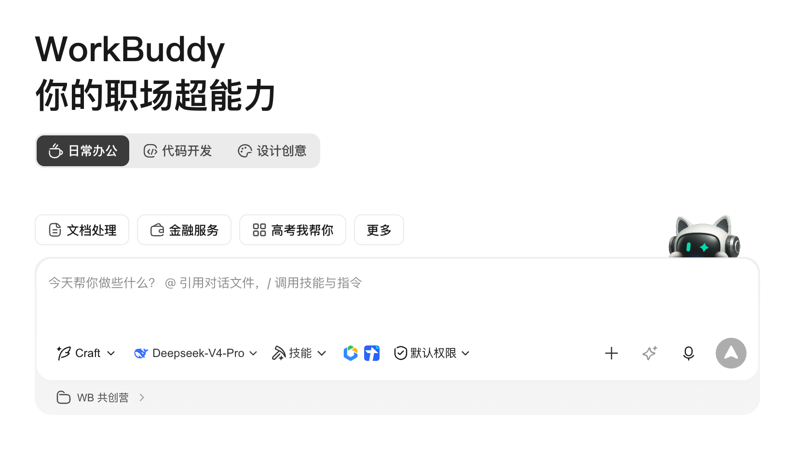
上传发票文件，并写清任务提示词
也可直接在对话框输入文件所在位置，让 AI 自行查找读取
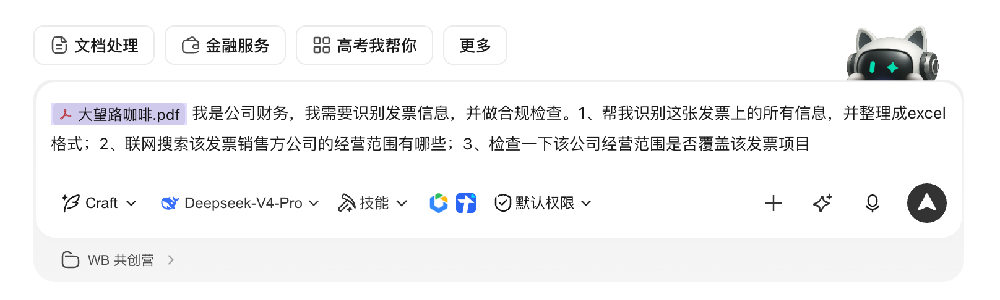
点击「优化提示词」，让 AI 自动结构化描述，确认后执行
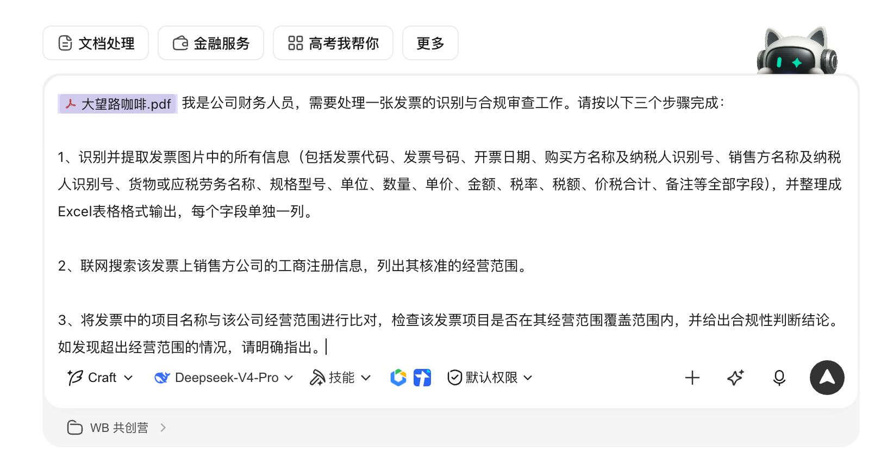
输出结果：发票信息提取、销售方工商信息、合规性判断结论
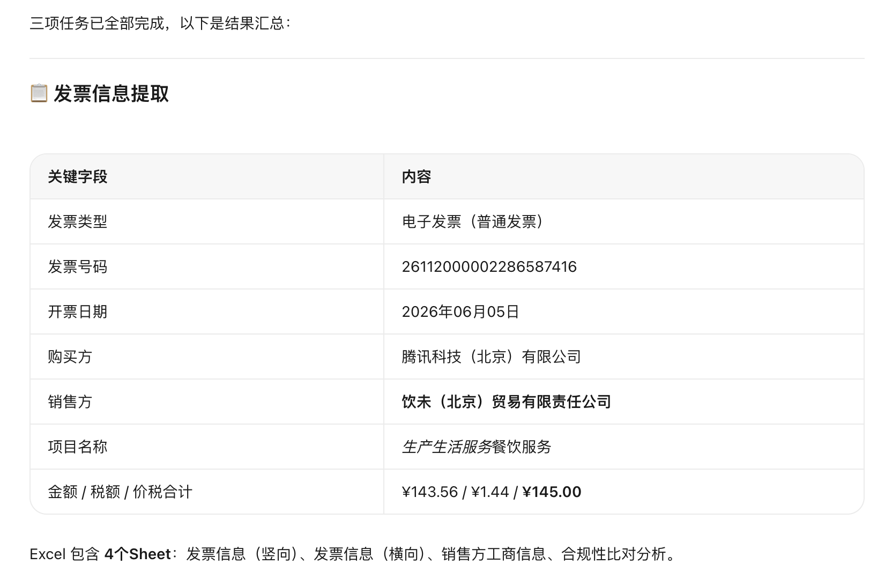
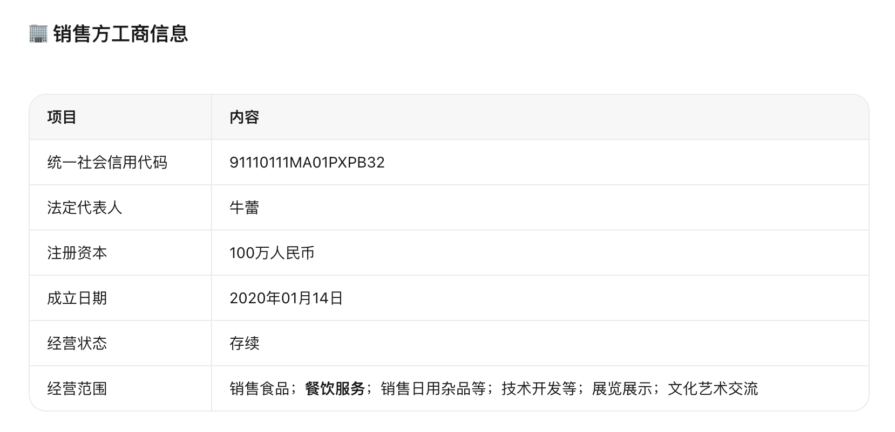
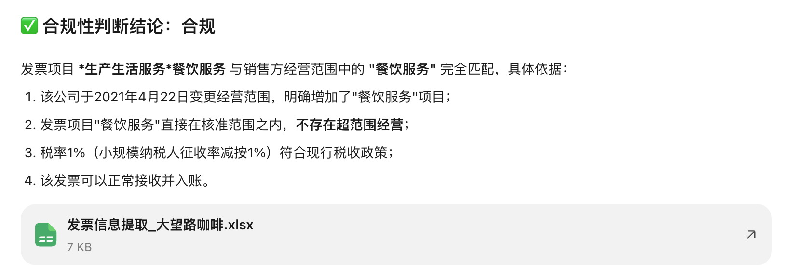
右侧直接预览 Excel 产物——含发票信息提取表、销售方工商信息、合规性比对分析
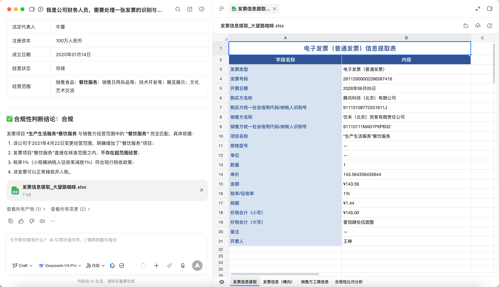
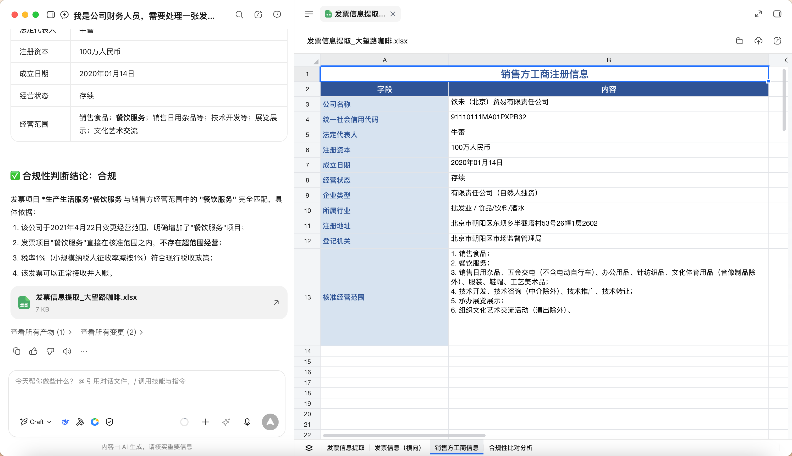
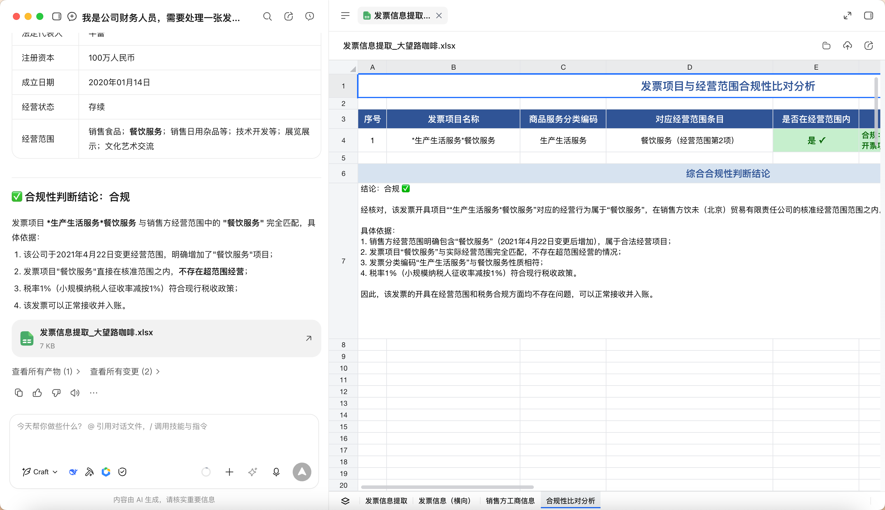
🌐 案例二：做一个宣传网页（代码任务）
切换到「代码开发」，并选择 Plan 模式
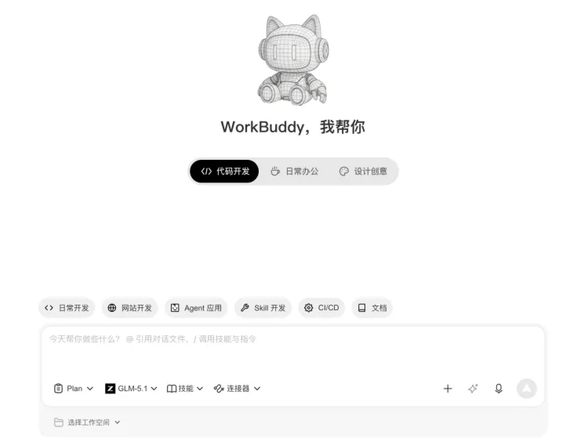
点击「网站开发」快捷模板
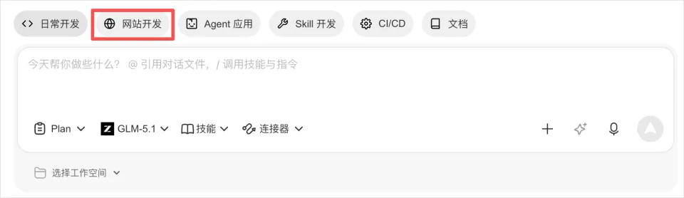
输入提示词，描述你的需求
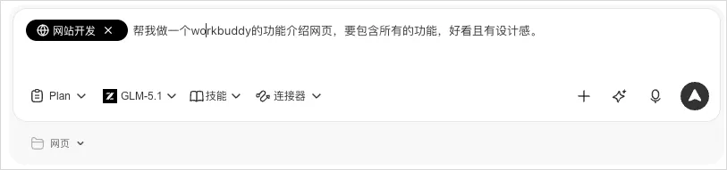
点击「优化提示词」，让 AI 自动结构化描述
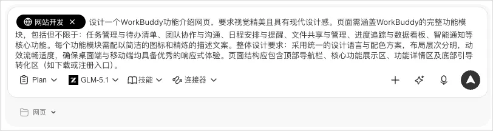
回答 AI 的澄清问题，确认计划后执行
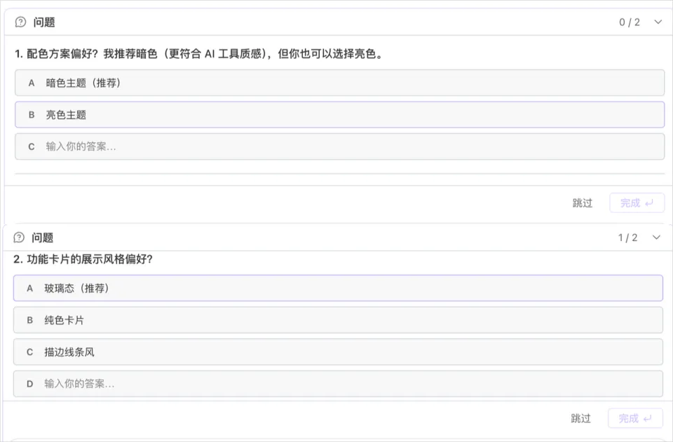
右侧直接预览网页效果
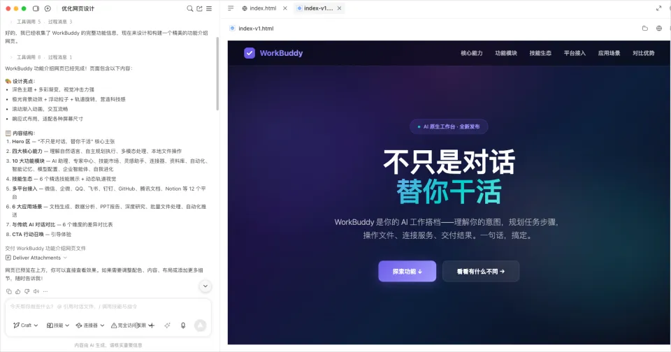
可追加调用「前端开发 Skill」继续优化视觉
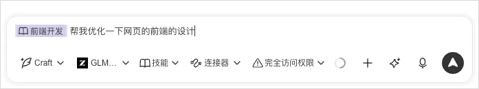
优化后的最终效果
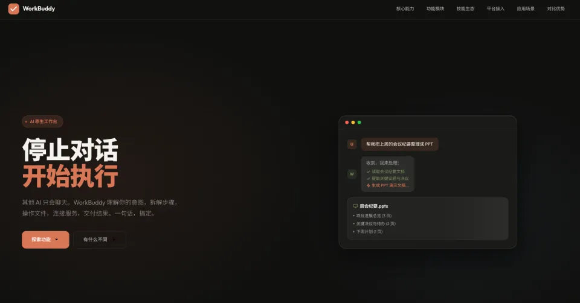
⏰ 案例三：设置自动化定时任务
点击左侧「自动化」
可以看到官方提供的现成模板，覆盖每日新闻推送、工作周报、提醒通知等常见场景
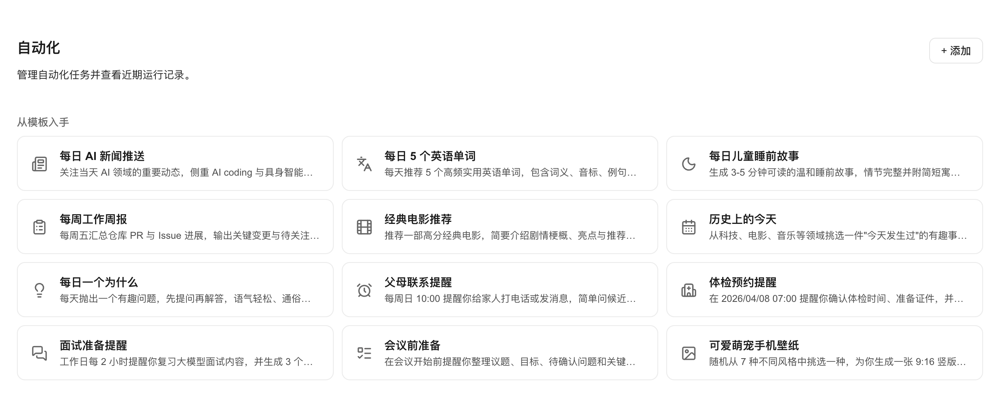
从模板入手，或添加自定义任务
方式一：从模板入手 —— 选择合适的模板，修改提示词和触发时间，点击「添加」即可启用
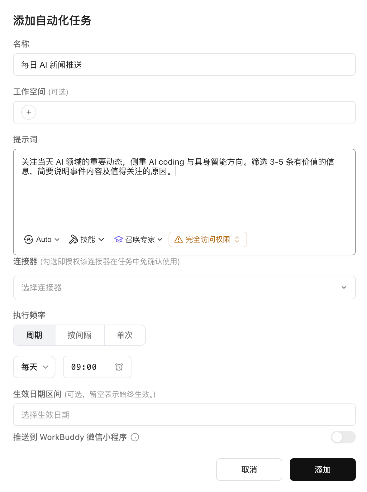
方式二：自定义任务 —— 点击右上角「+ 添加」，填写任务名称、提示词（可引用 Skill）、执行频率与时间
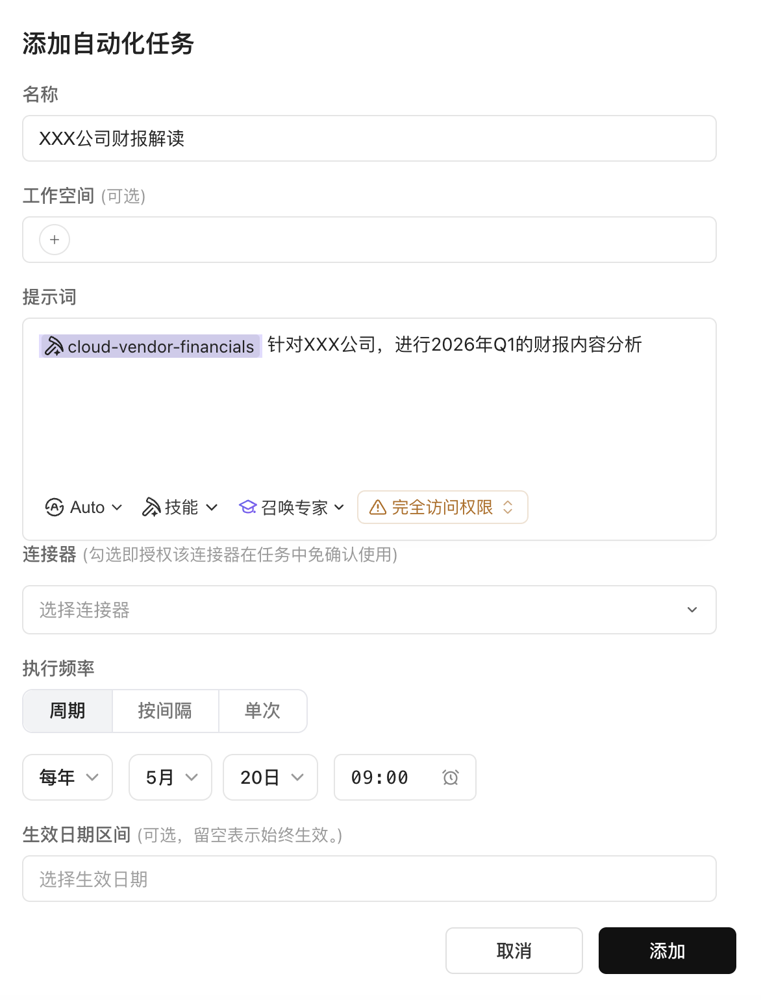
点击「添加」保存并启用
任务会在你设定的时间自动触发执行，结果可推送到 WorkBuddy 微信小程序——早上起来打开手机就能看到